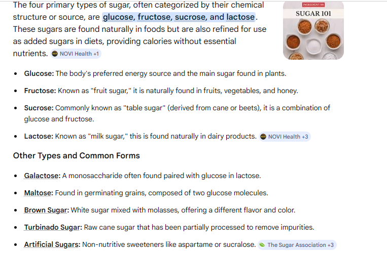
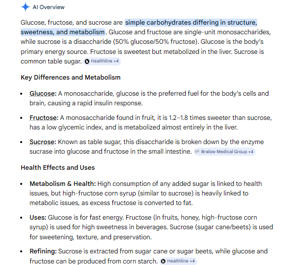
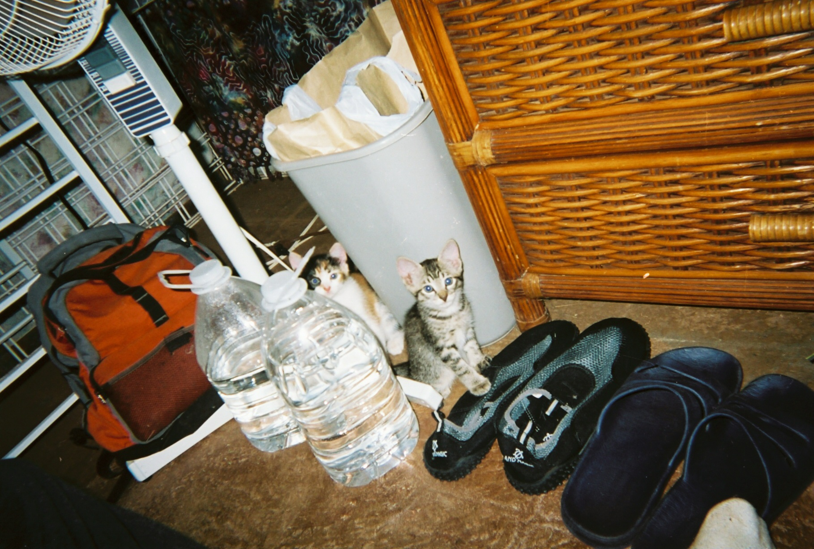
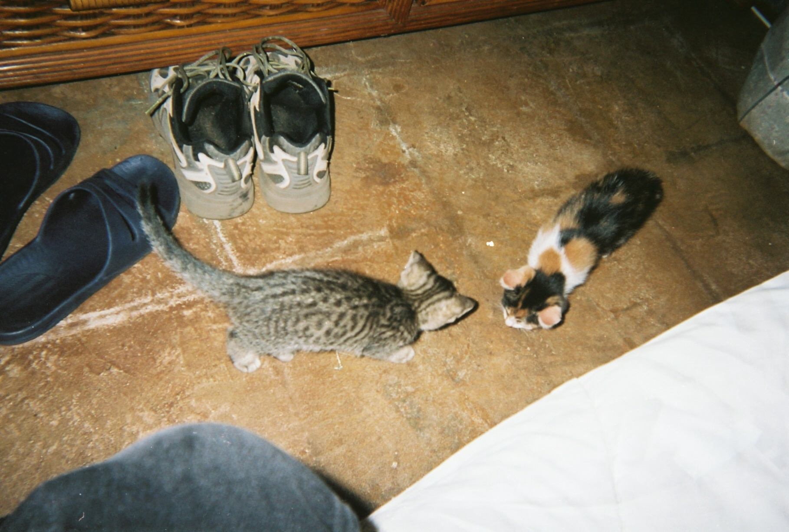
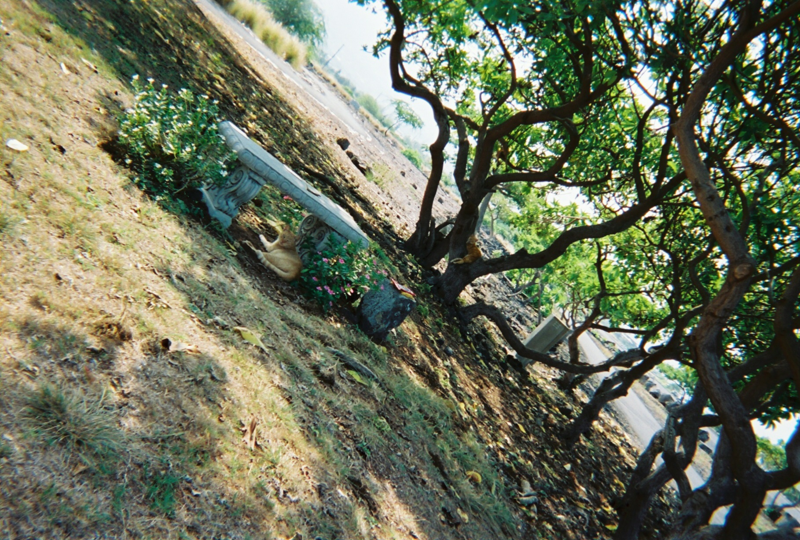

Acoustics
When you think you can hear things from far away, even someone else's thoughts, you can. It isn't just your psychic ability, your wisdom about neurology, your loneliness and your desire to do so.
Botany
"Botany, the eldest daughter of medicine."
~ Johann Hermann Baas, azquotes

By
LuckyStarr -
Own work, CC BY 2.5,
Link
"The earth is what we all have in common."
~ Wendell Berry
From Wikipedia: "Nicotiana rustica"

By Wowbobwow12 at English Wikipedia,
CC BY-SA 3.0, Link
From Wikipedia: "Tabasco peppers"

By Unknown author -
http://www.usda.gov/oc/photo/73cs0339.htm,
Public Domain, Link
Chemistry
"Silver iodide can be used to seed clouds and thereby intitiate rainfall. One gram of silver iodide can provide a trillion (109) seed crystals around which water vapour will condense into droplets large enough to fall to earth as rain. An aircraft flying through a rain cloud dispersing this chemical as a fine smoke can produce a torrential downpour.
Secret tests carried out by Britain's Ministry of Defence in August 1952 in the West of England resulted in a flash flood that engulfed the seaside resort of Lynmouth, sweeping away houses and sending 31 inhabitants to their deaths."
~ John Emsley, "Nature's Building Blocks"
(I think 109 is a billion. 1012 is a trillion, no?)
"Energy is never created nor destroyed."
chem world
Computer Science
ping.pe
"I've always felt that specialization is best left to the insects."
~ Gregory Benford
brainy quotes about specialization
Earth Science
"It's the edge of the world and all of Western civilization,
The sun may rise in the East, at least it settled in a final location,
It's understood that Hollywood sells Californication,"
~ Flea, Frusciante, Smith, Kiedis
"I keep on searchin' and I keep on lookin',
but fools are the same from Watts to Brooklyn,"
~ Name That Coolio
Eekonomics
Hey, this isn't science!
Wow. That's a big resumé.
we for umm Sara
business models from the rising 1990s computer companies:
Microsoft: business only
Apple: fun only
Oracle: the hidden database
Unix: The Underground Federation
IBM: cloning
business models from the rising 2000s computer companies:
__________:___________________?
__________:___________________?
__________:___________________?
__________:___________________?
__________:___________________?
__________:___________________?
__________:___________________?
"I left that day with a lunchbox full of gears,
I've never considered myself a thief,
but GM wouldn't miss just one little piece,
especially if I strung it out over several years,"
~ Wayne Kemp, "One Piece at a Time"
Physics
Can energy be seen?
Can time be seen?
If there are spirits, how might they influence the minds and work of scientists?
Mitch
Berkeley Lab particle accelerator (the image is a link):

particle accelerator in Japan:

atthelakemagazine.com:

@fayehadleyofficial #ad STOP “guesstimating” brake pad life—measure it RIGHT! “50% brake pad life left”… 50% of what? Pros don’t guess—they measure. -Real numbers -Consistent across any car -Easier to trust -Brake pads at 3mm? = time to replace! So… mm or %—what were you taught? @The NAPA Network #techtips #cartok #NAPApartner #tiktoklearningcampaign ♬ original sound - Faye
Physiology
Are your eyes more attracted to light or dark?
"Antimatter is one of the more astonishing concepts in the landscape of particle physics. In science fiction, it appears as a weapon of awesome power, destructive or otherwise, largely because when matter and antimatter meet, they annihilate one another in a blaze of released energy. In real life, it has, perhaps surprisingly, been put to use in medicine before warfare."
~ Jon Butterworth, "Atom Land: A Guided Tour through the Strange (and Impossibly Small) World of Particle Physics"
technogym

technogym
Thanks, Tommy. A brief moment?
healthline suc-gluc-fruc diffs


Dang, can't they just show charts?
Leprosy ain't what it used to be.

Will HIV de-evolve into something like the common cold?
Is The Plague, The Black Plague, The Bubonic Plague of 1307
or whatever those famous plagues were that wiped out entire villages
now just another version of the common cold? Influenza?
Zoology
"Zoologists seem to consider the cerebration of cats and dogs about 50-50 -- but my respect always goes to the cool, sure, impersonal, delicately poised feline who minds his business and never slobbers."
~ H.P. Lovecraft, azquotes



Math and science are for everyone. Math and science are IN everyone.
From Wikipedia: "Gymnosperm"

By Muhammad Mahdi Karim - Own work, GFDL 1.2, Link
"There is something fascinating about science. One gets such wholesale returns of conjecture out of such a trifling investment of fact."
~ Mark Twain